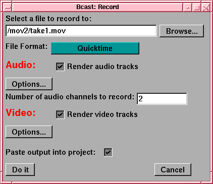

Most users have trouble understanding the file format dialog.

Broadcast 2000 saves three types of data to disk: Edit Decision Lists, audio data, and video data. Audio and video data is encapsulated in a variety of formats. The file format determines which format encapsulates the data.
The Audio and Video areas define properties specific to the audio and video data. Within each file format, a number of compression parameters can be set for the audio and video. These compression parameters are set using the Options buttons for each data type. When you want to increase or decrease the amount of compression you should think Options.